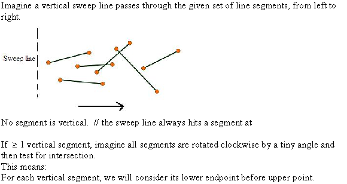
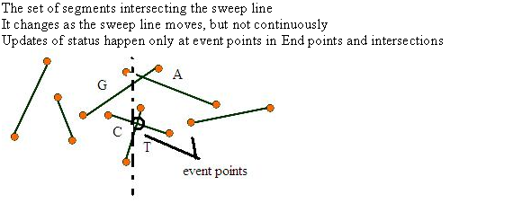
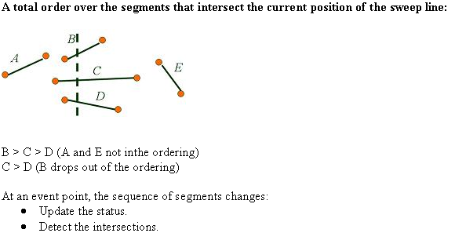
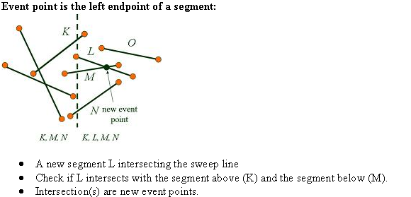
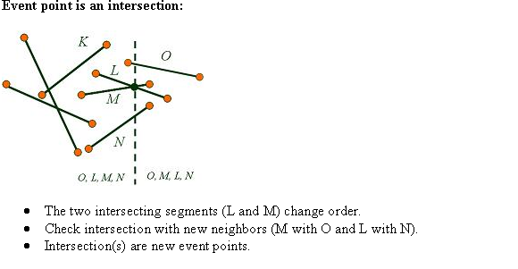
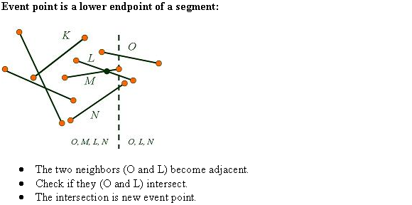

Comparability of Two Segments
Consider two segments a and b comparable at
x. A way needs to be determined whether or
hold
in time.
Neither a nor bare vertical. Coordinates of a
and b are known already. Consider the point and
respectively. First make a call to
time.
Neither a nor bare vertical. Coordinates of a
and b are known already. Consider the point and
respectively. First make a call to
SEGMENTS-INTERSECT
It takes time so,
till now everything is good. Now, if it returns true, our problem
is solved. Just it has to be retuned that that they intersect. If
it returns false, then cross products needs to be applied.
Here are four coordinatesaccording to our point co-ordinates,
The cross products of and
&and is
found.
is
found.
If and is clockwise from the other one in each pair,
holds
else, holds.
This whole computation takes constant time because it is just a onetime comparison between segments. For diagrammatic representation refer figure 33.4 of the textbook.
Consider a disk which consists of a circle plus its interior. The circle is represented by its center point and radius.
The two disks intersect if they have at least one point in common.
The center points and radii of the two disks are available. The sum of radii and distance between the two centers helps to determine whether the disks intersect or not. The following is the required algorithm:
1 Calculate the distance between the two centers, say it is d.
2 Calculate the value of , where are the radius of the two disks respectively.
3 If then, the two circles intersect with each other.
4 Otherwise if then the two circles don’t intersect with each other.
The above algorithm involves only additions and
multiplications. It has a time complexity of  .
.
The following algorithm determines whether any two disks in a set of n disks intersect or not:
Refer textbook chapter 33, section 33.2 for the algorithm ANY-SEGMENTS-INTERSECT(S).
The disks will have two event points; the leftmost x – coordinate and its rightmost x-coordinate.
• Insert the y – coordinate of the center of the disk d into the red-black tree, when the disk’s leftmost point is encountered. The y – coordinate is inserted with a pointer to d itself as auxiliary data.
• Use the inserted point in the red-black tree and find the at most disks that are in its neighbors.
Modify the lines 4 to 10 in the algorithm ANY-SEGMENTS-INTERSECT(S) as per the above two instructions. Keep the rest of the algorithm without any change.
The modified algorithm determines whether any two disks intersect or not, in a set of n disks.
The statements with constant running time are modified in the algorithm ANY-SEGMENTS-INTERSECT(S).
The modified algorithm will have same time complexity as ANY-SEGMENTS-INTERSECT(S). So, the time complexity is .
Therefore, the running time of the modified ANY-SEGMENTS-INTERSECT(S) algorithm that determines whether any two disks intersect or not, in a set of n disks is .





